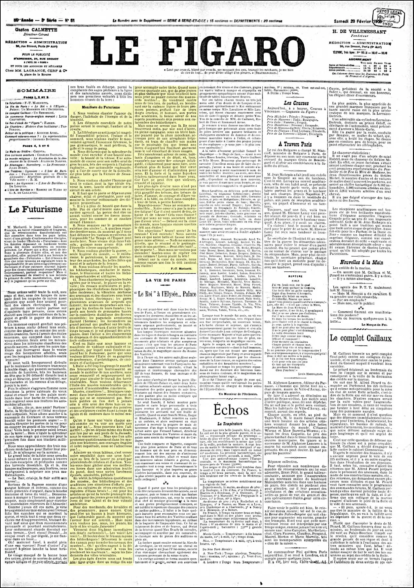
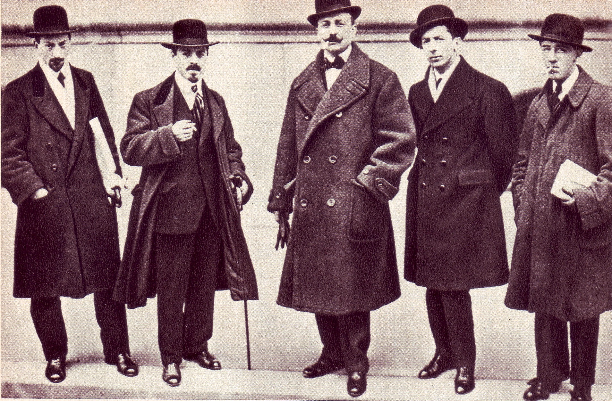
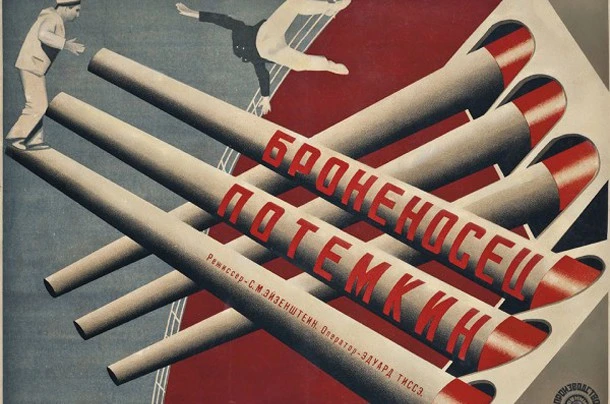
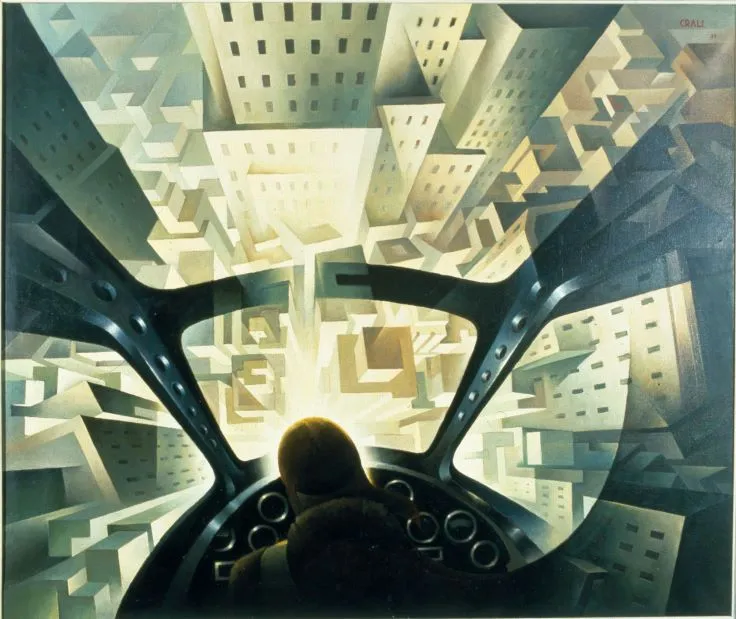
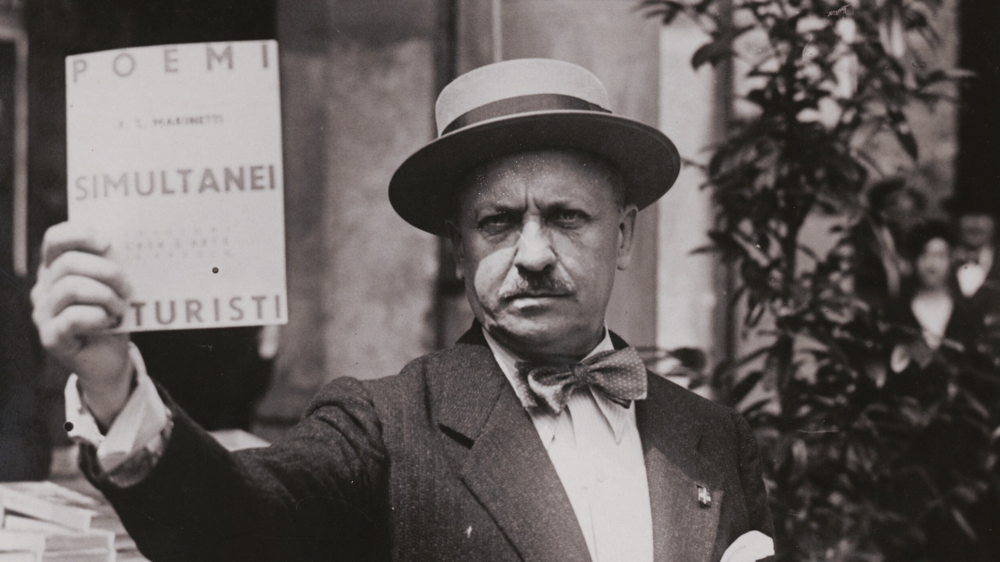

Il Futurismo nasce in Italia, in un periodo di notevole fase evolutiva dove tutto il mondo dell'arte e della cultura era stimolato da numerosi fattori determinanti: le guerre, la trasformazione sociale dei popoli, i grandi cambiamenti politici e le nuove scoperte tecnologiche e di comunicazione, come il telegrafo senza fili, la radio, gli aeroplani e le prime cineprese; tutti fattori che arrivarono a cambiare completamente la percezione delle distanze e del tempo, "avvicinando" fra loro i continenti, creando nuove connessioni.
Il XX secolo era quindi invaso da un nuovo vento, che portava una nuova realtà: la velocità.
I futuristi intendevano idealmente "bruciare i musei e le biblioteche" in modo da non avere più rapporti con il passato concentrarsi così sul dinamico presente; tutto questo, come è ovvio, in senso ideologico.
Le catene di montaggio abbattevano i tempi di produzione, le automobili aumentavano ogni giorno, le strade iniziarono a riempirsi di luci artificiali, si avvertiva questa nuova sensazione di futuro e velocità sia nel tempo impiegato per produrre o arrivare ad una destinazione, sia nei nuovi spazi che potevano essere percorsi, sia nelle nuove possibilità di comunicazione.
Gino Severini racconta che quando venne in contatto con Marinetti per decidere se aderire o meno al Futurismo parlò anche con Amedeo Modigliani, che egli avrebbe voluto nel gruppo, ma il pittore declinò l'offerta perché come scrisse:
«Queste manifestazioni non gli andavano, il complementarismo congenito lo fece ridere, e con ragione, perciò invece di aderire mi sconsigliò di mettermi in quelle storie; ma io avevo troppa affezione fraterna per Boccioni, inoltre ero, e sono sempre stato pronto ad accettare l'avventura […]»
«Compagni! Noi vi dichiariamo che il trionfante progresso delle scienze ha determinato nell'umanità mutamenti tanto profondi, da scavare un abisso fra i docili schiavi del passato e noi liberi, noi sicuri della radiosa magnificenza del futuro…»
(dal Manifesto dei pittori futuristi, febbraio 1910)
Nel Manifesto Futurista (1909), pubblicato inizialmente in vari giornali italiani e, definitivamente, due settimane dopo sul quotidiano francese Le Figaro il 20 febbraio 1909, Filippo Tommaso Marinetti espose i principi-base del movimento.
Poco tempo dopo a Milano nelfebbraio 1910 i pittori Umberto Boccioni, Carlo Carrà, Giacomo Balla, Gino Severini e Luigi Russolo firmarono il Manifesto dei pittori futuristi e nell'aprile dello stesso anno il Manifesto tecnico della pittura futurista.

Nei manifesti si esaltava la tecnica e si dichiarava una fiducia illimitata nel progresso, si decretava la fine delle vecchie ideologie.
Si esaltavano inoltre il dinamismo, la velocità, l'industria, il militarismo, il nazionalismo e la guerra, che veniva definita come "sola igiene del mondo".
La prima importante esposizione futurista si tenne a Parigi presso la galleria Bernheim-Jeune dal 5 al 24 febbraio 1912.
All'inaugurazione della mostra erano presenti Marinetti, Boccioni, Carrà, Severini e Russolo.

L'accoglienza iniziale fu fredda, ma nelle settimane successive il movimento suscitò un certo interesse divenendo presto oggetto di attenzioni internazionali tanto da favorire la riproposizione della mostra anche in altre città europee come Berlino.
Alla morte di Umberto Boccioni nel 1916, Carrà e Severini si ritrovarono in una fase di evoluzione verso la pittura cubista, di conseguenza il gruppo milanese si sciolse spostando la sede del movimento da Milano a Roma, con la conseguente nascita del "secondo Futurismo".
Il Manifesto futurista di Marinetti era stato pubblicato a San Pietroburgo appena un mese dopo l'uscita su Le Figaro, e già negli anni 1911 e 1912 Natal'ja Sergeevna Gončarova e Michail Fëdorovič Larionov, che in patria verrà definito il "padre del Futurismo russo", furono i concreti iniziatori del movimento in Russia.
Nel 1913 il pittore Kazimir Severinovič Malevič, il compositore Michail Matjušin e lo scrittore Aleksej Eliseevič Kručënych redassero il manifesto del Primo congresso Futurista russo.

Nel gennaio 1914 Marinetti stesso si recò a Mosca.
Dal movimento d'avanguardia futurista nacquero negli anni immediatamente precedenti la rivoluzione del 1917 due importanti avanguardie artistiche, il Costruttivismo e il Suprematismo.
L'attenzione che i giornali e il pubblico dedicarono a Marinetti fu enorme, ma non ci fu la stessa attenzione da parte dei futuristi russi, alcuni dei quali tentarono anche di ostacolare la visita Marinetti.
Altri invece, come Sersenevič, furono più ospitali e cordiali.
Il temperamento e le declamazioni di Marinetti riscossero successo ovunque; ma Marinetti tentò invano di chiamare i futuristi russi ad unire le forze con i futuristi italiani, perché i maggiori poeti russi, Chlebnikov, Livsič, Majakovskij e anche il regista Larionov criticarono Marinetti.
L'ultima "mostra futurista" si tenne nel 1915 a Pietrogrado.
In Francia il Futurismo non si organizzò mai come movimento, ma ebbe almeno due nomi degni di nota: Guillaume Apollinaire e Valentine de Saint-Point.
Apollinaire scrisse il manifesto L'antitradition futuriste (29 giugno 1913), pubblicato su Lacerba solo il 25 settembre dopo le aggiunte e le correzioni di Marinetti.
I successivi Calligrammes (1918) rivelano la chiara influenza del paroliberismo futurista poeta francese.
Valentine de Saint Point, nipote di Lamartine, scrisse il Manifesto della donna futurista, (1912) con il sottotitolo “Risposta a F. T. Marinetti”, in un volantino pubblicato simultaneamente a Parigi e a Milano.
Del 1913 è il Manifesto futurista della lussuria.
Il secondo Futurismo fu sostanzialmente diviso in due fasi.
La prima andava dal 1918, due anni dopo la morte di Umberto Boccioni, al 1928 fu caratterizzata da un forte legame con la cultura post-cubista e costruttivista mentre la seconda invece, dal 1929 al 1939, fu molto più legata alle idee del surrealismo.
Di questa corrente - che si concluse attraverso il cosiddetto "terzo Futurismo", portando anche all'epilogo del Futurismo stesso - fecero parte molti pittori fra cui Fillia, Enrico Prampolini, Nicolay Diulgheroff, Wladimiro Tulli ma anche Mario Sironi, Ardengo Soffici, Ottone Rosai, Carlo Vittorio Testi e la moglie Fides Stagni .

Se la prima fase del Futurismo fu caratterizzata da un'ideologia guerrafondaia e fanatica, la seconda ebbe un effettivo legame con il regime fascista, nel senso che abbracciò gli stilemi della comunicazione governativa dell'epoca e si valse di speciali favori.
I futuristi di sinistra, generalmente meno noti nel panorama culturale italiano dell'epoca, costituirono quella parte del Futurismo collocata politicamente su posizioni vicine all'anarchismo anche quando il movimento con i suoi fondatori e personaggi ritenuti principali fu fagocitato dal fascismo.
Anche se la gerarchia fascista riservò ai futuristi coevi una sottovalutazione talvolta sprezzante, l'osservazione dei principi autoritaristici e la poetica interventista del Futurismo furono quasi sempre presenti negli artisti del gruppo, fino a che alcuni di questi non abbracciarono altri movimenti e presero le distanze dall'ideologia fascista.
(Carlo Carrà, ad esempio, abbracciò la metafisica).
Il futurismo ha avuto vita insieme al suo principale esponente Marinetti, infatti la fine del movimento avviene con la morte di quest'ultimo.
Questo testimonia il fatto che il movimento futurista è rimasto attivo ininterrottamente dal 1909 al 1944.
